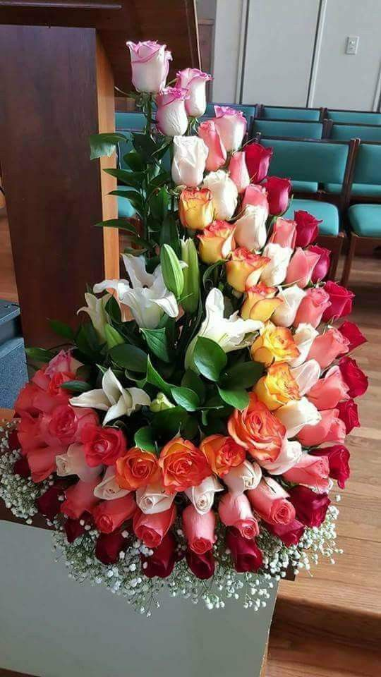
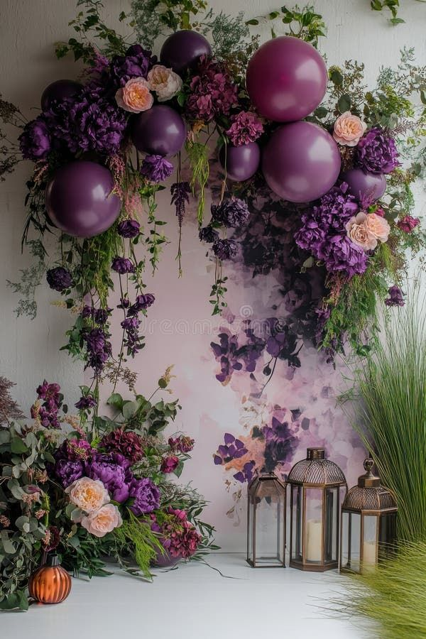
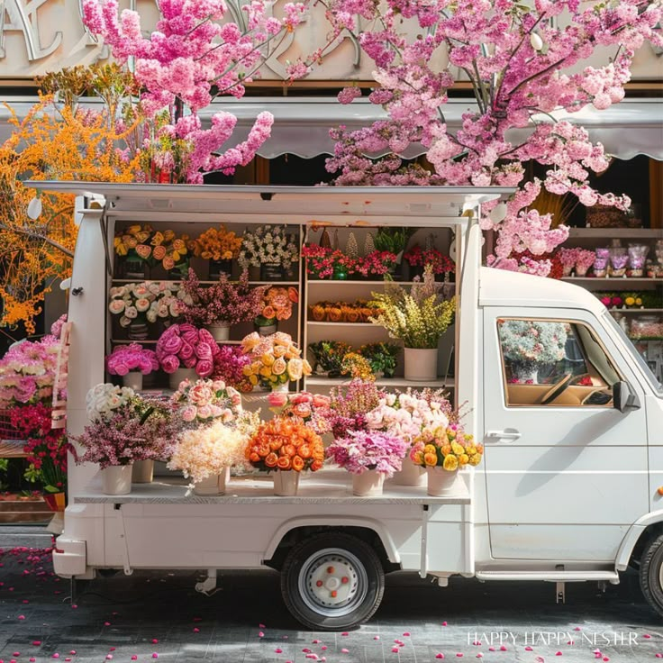
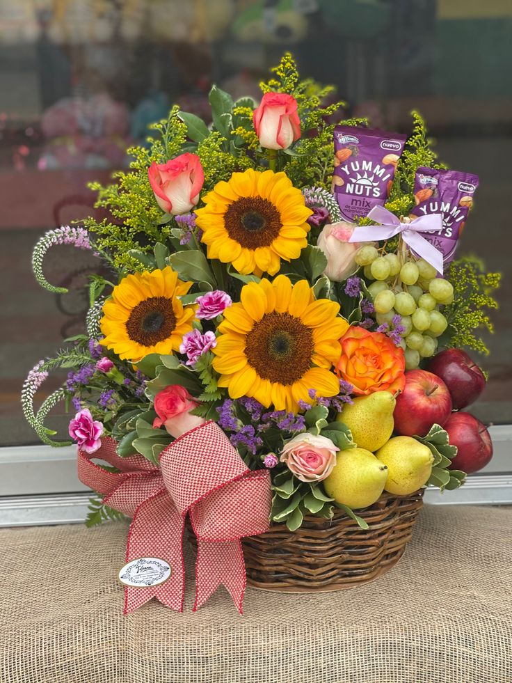
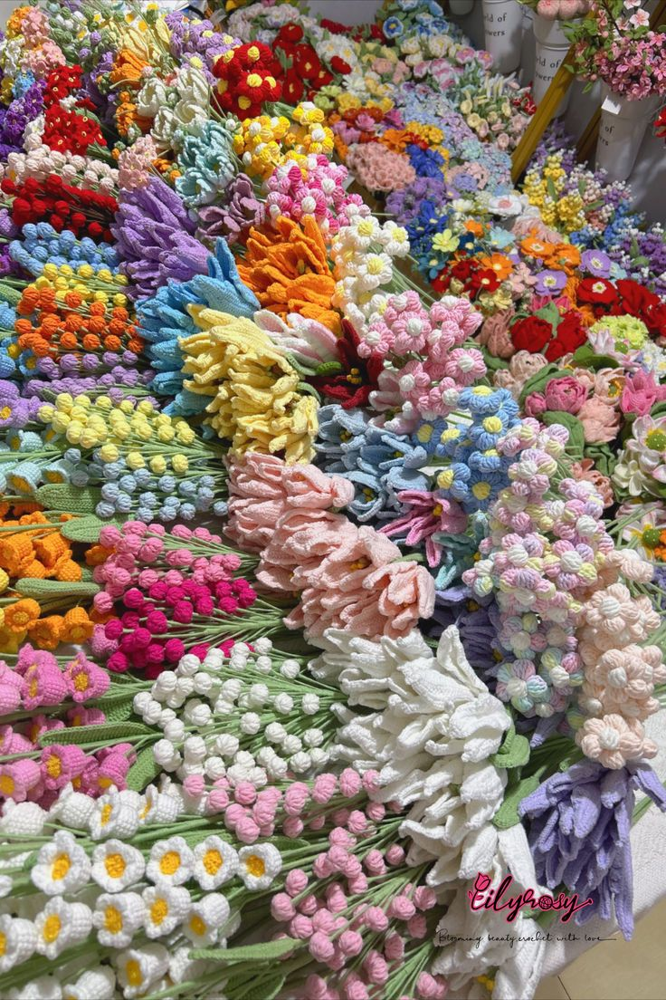
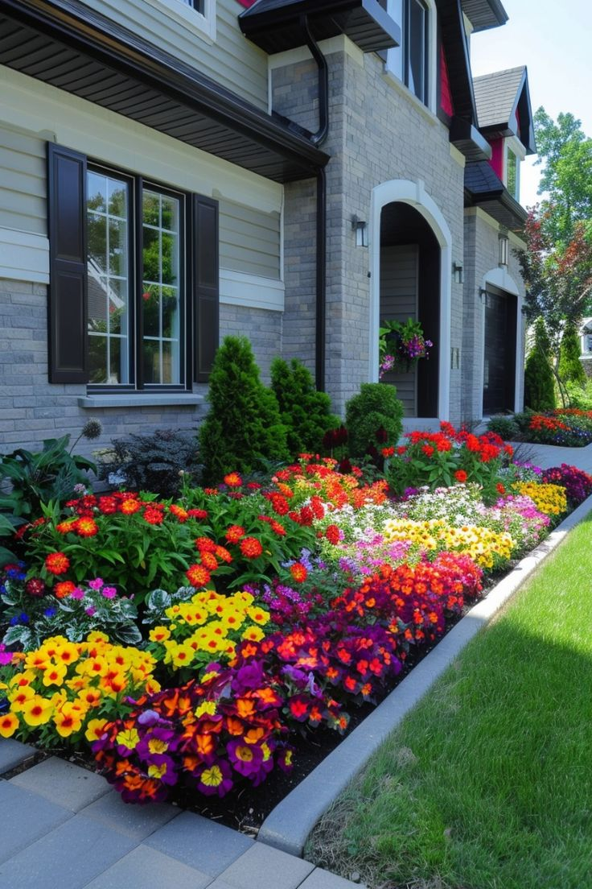
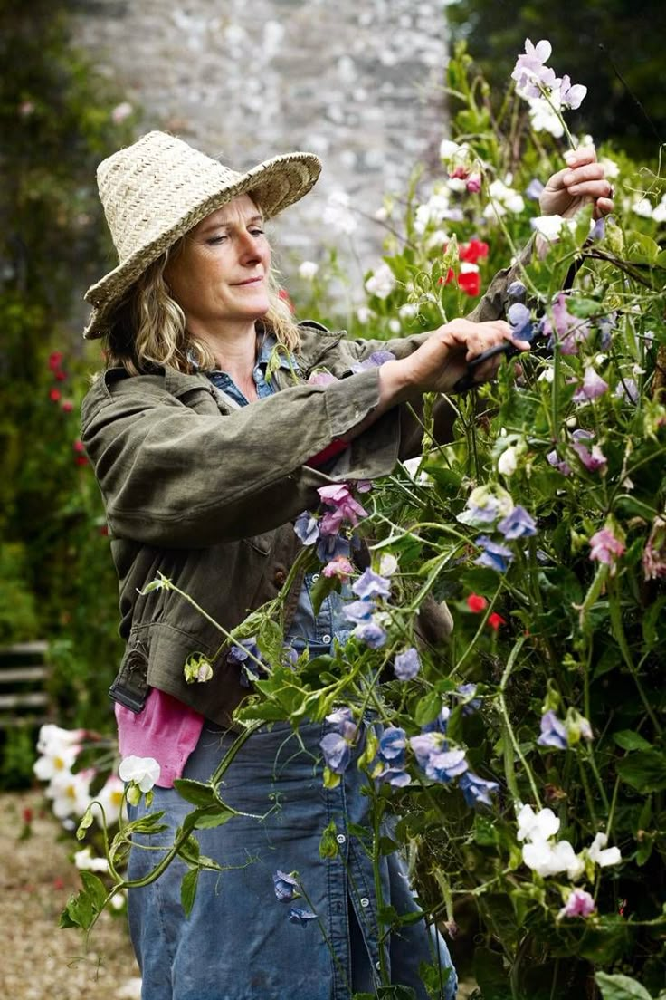
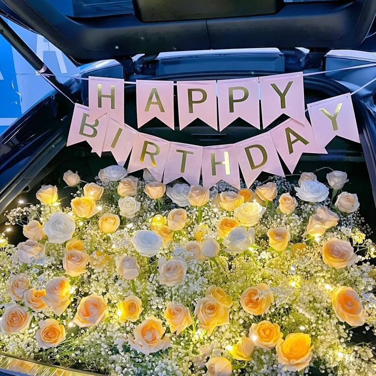

We offer custom-designed flower bouquets tailored for birthdays, anniversaries, graduations, or just because. Our florists carefully select the freshest flowers and arrange them beautifully to suit your preferences and the occasion.

Make your event unforgettable with our creative floral decorations. From intimate weddings to grand corporate events, we bring your vision to life using vibrant flowers, elegant centerpieces, and thematic color palettes.

Send a smile across the miles with our reliable same-day and next-day flower delivery services. We ensure your flowers arrive fresh and on time, beautifully wrapped and full of love for the recipient.

Our premium gift baskets include fresh blooms paired with chocolates, fruits, plush toys, and personalized messages. Perfect for holidays, corporate gifting, or any special surprise for your loved ones.

Running a flower shop or event business? Partner with us for bulk orders of premium-quality flowers at wholesale prices. We guarantee freshness, timely delivery, and a wide selection of seasonal and exotic blooms.

Transform your outdoor space with a stunning flower garden makeover. From redesigning layouts and choosing the right plants to improving soil and adding decorative elements, this renovation idea will bring new life and color to your home garden.

One of our key services is providing skilled gardeners to help maintain and nurture your flower garden. Whether it’s planting, pruning, or regular garden care, our experts ensure your garden stays healthy and beautiful year-round.

Make birthdays unforgettable with our Surprise Birthday Car service! We deliver a fully decorated car right to your doorstep, complete with balloons, music, and personalized messages to celebrate your loved one's special day in style.
If you love crafting and flowers, our Crochet Flower Tutorials are perfect for you! We provide step-by-step guides to help you create beautiful, handmade crochet flowers. From beginners to advanced crafters, our tutorials cater to all skill levels.
Want your flowers to stay fresh longer? Discover helpful tips on how to make your floral arrangements last. From trimming stems properly to using the right amount of water and flower food, these easy tricks will keep your blooms vibrant and beautiful for days.
Learn the basics of growing flower seeds—from preparing the soil and evenly sowing the seeds, to watering and sunlight needs. This video shows how just one 250g bag can transform into a blooming garden with proper care and patience.
Discover the best methods to dry and preserve your flowers beautifully. This video covers air-drying, pressing, and silica gel techniques, helping you keep your blooms lasting for months or even years—perfect for DIY décor, crafts, or keepsakes.